上线之后 / AFTER GO-LIVE：京张人机共创城市与采用空间
以京张铁路运营文化为空间语法，以四态空间系统把人机共创、服务采用、人工降级与资产退出转化为三处重点区的平面、断面、界面和构件设计。
上线之后 / AFTER GO-LIVE
执行摘要：把“上线”设计成可回到普通城市生活的空间
本方案的主体是城市规划、建筑更新与公共空间设计。“上线之后”不是一套漂浮于场地之上的运营制度，而是一组会改变平面、断面、界面与构件的空间条件：服务在普通运行、AI 辅助、降级为仅人工、退出并复用四种状态间转换，空间仍保持连续、无障碍、可停留、可维护。一条京张采用脊串联众智园“原型编组场”、AI 原点“共译站台”和大钟寺“城市采用站厅类型”；中关村科技服务翼与小月河场景赋能翼横向接入。空间数据 指标
三处重点区不再只是功能点位。众智园绘制测试—公众界面与普通绕行；AI 原点绘制开放首层、无障碍模型庭和日夜共用断面；大钟寺绘制公共站厅、可逆单元、人工柜台与后勤维护带。三处方案均是等待官方 polygon 和现场资料后校准的“典型空间方案”，其中大钟寺明确不以当前 PROV-KEY-003 冒充真实站点。来源 深度
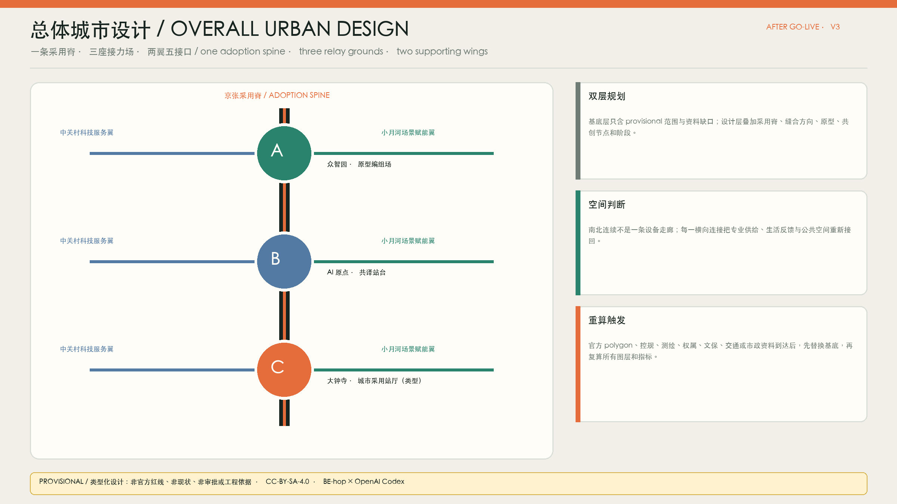
设计依据与资料清单
设计依据分为四层：征集公告与面向智能体任务书规定任务和成果接口；仓库资料注册表规定来源可用性；北京市与海淀区公开资料支持京张历史、遗址公园和创新带背景；法律政策只在各自适用范围内约束具体场景。所有来源记录发布者、日期、用途和不可外推边界，外部案例不被当成本地绩效证据。来源 来源
官方场地和重点区 polygon、法定用地、现状测绘、建筑质量、权属、市政、交通、地下高铁与文保控制尚未齐全。提交几何使用仓库 provisional 数据作生成和复算基底，不支撑红线、站点、道路、拆改留或建设量结论；OSM 或非正式定位不得进入正式面积与工程判断。三张 AI 意象只表达类型化空间氛围，均与确定性平面、断面并列并标明“非现状、非审批依据”。空间数据 来源
历史空间语法：事实、功能与当代使用
京张铁路的价值不被简化成道岔、信号或站台造型。线路的连续运输转译为公共慢行和采用主脊；站台的乘降交接转译为公众、专业人员与运营者平等工作的公共界面；编组场的组合调度转译为构件、算法与服务的小样测试；值班维修转译为有人维护、故障复盘和状态公开；时刻班次转译为日夜共享空间的时间组织；退役更新转译为构件迁移、服务撤回和资产再用。来源 深度
历史转译必须同时经过“事实可信”和“现实有用”两道门。真实遗存、轨道、站房或构筑物的保护、承载、移动和开放方式等待文保、铁路、结构与园林专业确认；在此之前，图纸只表达抽象的连续、交接、编组、维修、班次与退役关系。六个外部案例也使用相同证据边界：只迁移公共问题入口、受控试验、居民协作、开放接口、全生命周期采购与部署后复核机制，不迁移其机构、预算、成效或治理权。空间数据
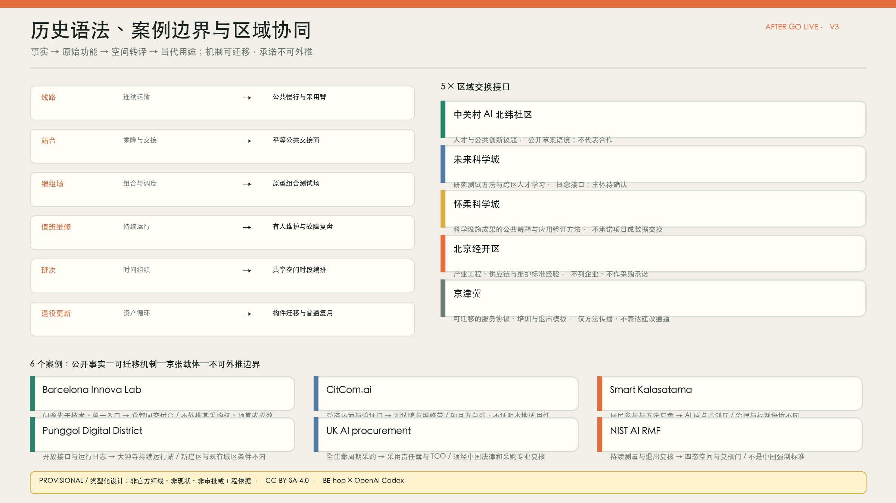
三层范围工作框架
统筹研究层把约九公里京张遗址公园及周边创新资源视为公共采用基础设施，研究高校、园区、居民、企业服务和蓝绿网络的接口；总体设计层在临时范围内组织采用脊、东西缝合、公共节点与阶段门；重点设计层提出三处可由专业团队继续深化的空间类型。三个层次共享同一来源与复算链，但任何概念功能都不能替代法定用地分类。来源 深度
“基底层—设计层”是控制误读的关键。基底层只放 provisional 范围、任务书确认的三处重点区和资料缺口；设计层放连续关系、原型、节点、构件和分期。官方 polygon 到达后先替换基底，再在 EPSG:4548 下复算所有面积、共享边界和图面；节点关系可作为待校准意图保留，但不能反向约束官方数据。空间数据 指标
统筹研究范围产业与未来城市研究
区域协同以“可交换接口”而非合作承诺表达。中关村 AI 北纬社区接口交换人才与公共创新议题，未来科学城交换研究测试方法，怀柔科学城交换科研成果公共解释与应用验证方法，北京经开区交换工程、供应链和维护经验，京津冀接口输出可迁移的服务协议、培训和退出模板。每项均标注证据状态，不列企业、投资或已确定通道。空间数据 来源
六个案例形成“公开事实—可迁移机制—京张空间载体—不可外推边界”比较表：Barcelona Innova Lab 对应公共问题入口和交付台，CitCom.ai 对应受控测试院，Smart Kalasatama 对应共创厅，Punggol 对应运行接口，英国 AI 采购指南对应采用责任簿与 TCO，NIST AI RMF 对应四态复核。案例只帮助组织验证，不证明本地已有主体、资金或适用制度。来源 来源
总体设计范围城市更新与控规深度城市设计
总体结构为“一脊、三场、两翼、五接口”。南北采用脊不是设备走廊或道路红线，而是一组连续公共界面：步行骑行优先、无障碍不中断、树荫雨洪共构、固定信息和人工服务可见、数字失效仍可普通使用。三条东西缝合方向把中关村专业服务和小月河生活反馈接回主脊；它们表达关系，不声称桥梁、道路或工程线位。空间数据 深度
核心概念“上线之后”的原创机制，是把服务生命周期变成可绘制、可验证的四态空间体系：同一社区、平台和场景网络不因 AI 设备离线而失效，也不因试点结束留下专用空壳。铁路运营语法、普通城市使用、可逆技术接口与责任接力在同一空间模式中协同，这与只展示技术或只讨论运营的方案形成明确差异。
四态空间系统把运营直接转为空间设计。NORMAL 状态下空间独立承担通行、停留与公共服务；AI-ASSISTED 状态通过干式、可逆接口加入模型、传感或终端；DEGRADED / HUMAN-ONLY 状态关闭自动入口，人员、柜台、纸本与固定信息接管；EXIT / REUSE 状态拆除服务模块，恢复普通用途或迁移复用。每种原型都必须证明四态下的出入口、净宽、值守、维护和资产路径。空间数据 指标
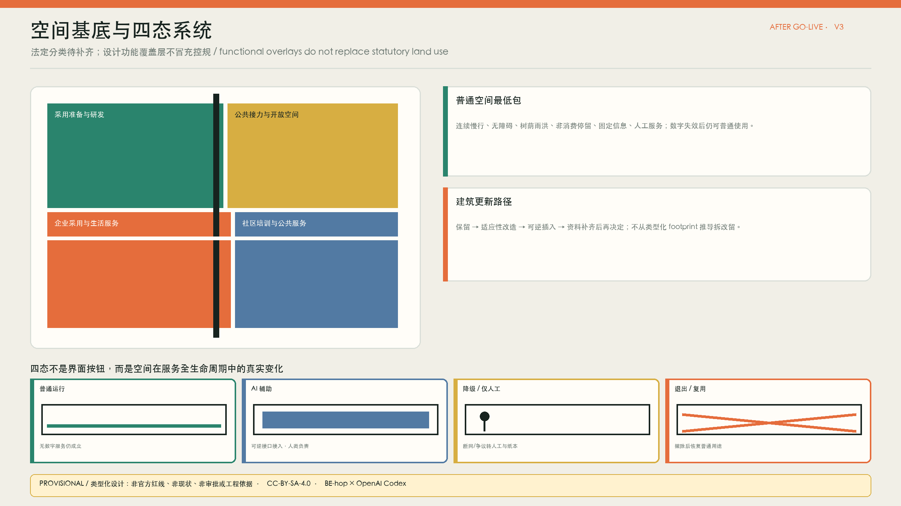
重点区域详细设计
众智园：原型编组场
典型平面以受控测试院为内核，公众观察廊与测试边界平行但物理分隔；维修工坊直接接入后勤带，交付台位于公共与受控区域的阈值，普通无障碍绕行路径不进入设备运行域。关系断面把测试、观察、雨洪和日常通行并置，低速机器人失联时先急停隔离，再由值守人员疏导并拖移设备；关闭设备后普通路径完整保留。空间数据 深度
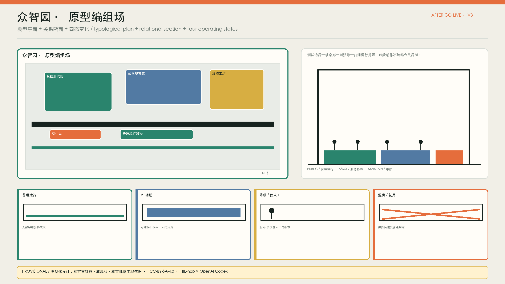
AI 原点：共译站台
开放首层把共创厅、无障碍模型庭、学习院、反馈廊和安静照护室串成可选择的公共路径。模型庭提供触觉、高对比、实体模块和坐姿参与界面；数字入口旁始终保留纸本、电话和人工主持。日间高校与研发团队使用学习空间，夜间居民与一线人员使用共议空间，照护者和需要安静环境的人可以进入但不被迫暴露。空间数据 深度
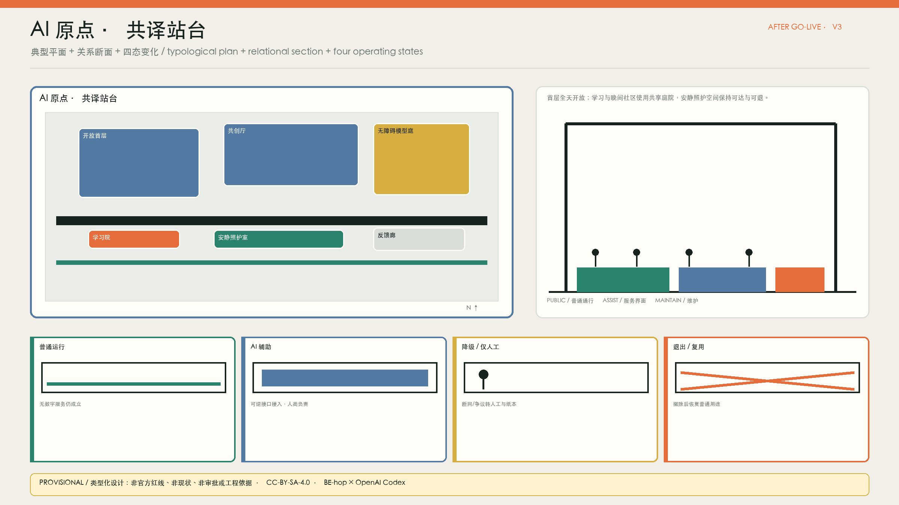
大钟寺：城市采用站厅类型
该图不是当前临时矩形上的真实总平面，而是等待官方站区 polygon 后迁移校准的类型。公共步行厅连接城市界面与高频生活流线，可逆服务单元布置在不侵占主通道的位置；人工柜台从每个数字入口可见，物流维护带与公众路径分离，非消费座席在活动和服务退出时仍保留。单元拆除后，地面接口封闭，空间恢复普通站厅。来源 空间数据
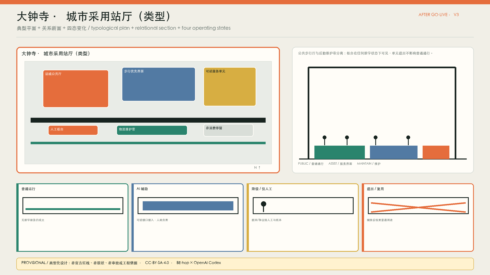
三处图纸都以典型关系而非工程尺寸为权威。现场测绘、消防、结构、文保、树木、权属和地下空间资料到达后，专业团队应保留“普通使用—可逆接入—人工降级—退出复用”的关系，重新决定准确位置、尺度、材料与建设方式。
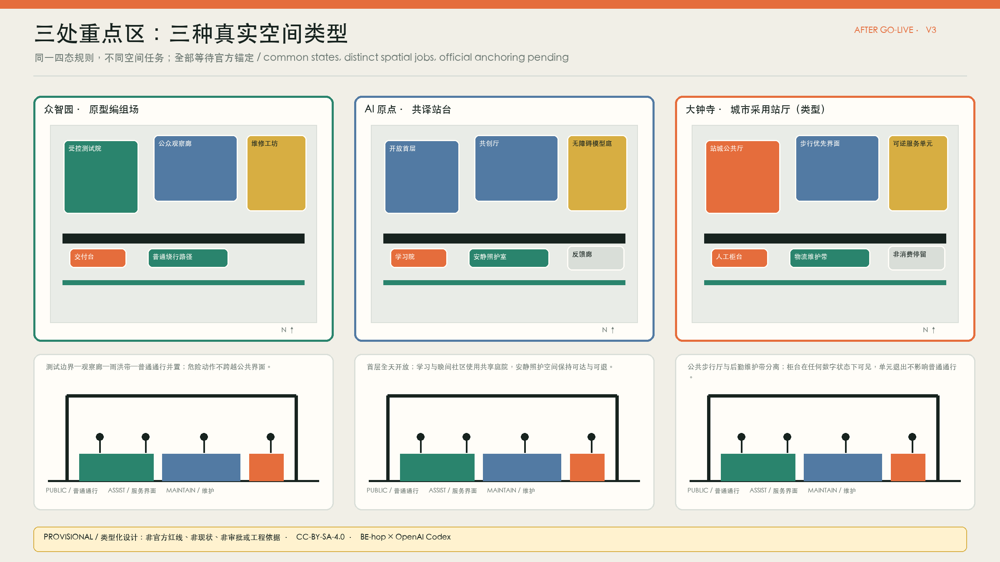
AI 创新生态、人才画像与 AI+ 场景
七类画像进入权利核验，而不是只计算覆盖人数：城市运营人员可暂停自动流程，小微商户自愿加入并确认发布，居民和照护者拥有普通入口与安静空间，无障碍使用者可否决不可达路径，低数字技能者拥有纸本、电话和人工等效入口，研发团队承担整改与文档责任，国际青年获得可理解语言与人工译审。每类同时记录谁受益、谁承担时间、数据、排队或维护成本。空间数据 指标
AI、算法、模型、机器人和数据并不被当作同一种能力：模型用于生成可比较的空间备选，算法用于低风险分诊，机器人只在受控园区测试，数据只在目的限定下支持复核。它们分别绑定公共服务、社区治理、慢行交通、产业验证与文化解释等城市问题，并由人工复核和普通入口构成共同安全边界。
十二张场景卡全部填写空间载体、受益者、负担承担者、问题所有者角色、待确认运营者、资源类型、AI 作用、人类决策、验收门、人工接管、普通替代、维护、申诉、停止和资产退出。模型服务、低速机器人和端侧断网连续性另有完整服务蓝图，依次显示输入、AI 作用、人类决定、空间载体、验收门、失败路径和退出闭环；“完整”只指设计契约字段齐全，不代表已通过真实试点。空间数据 指标
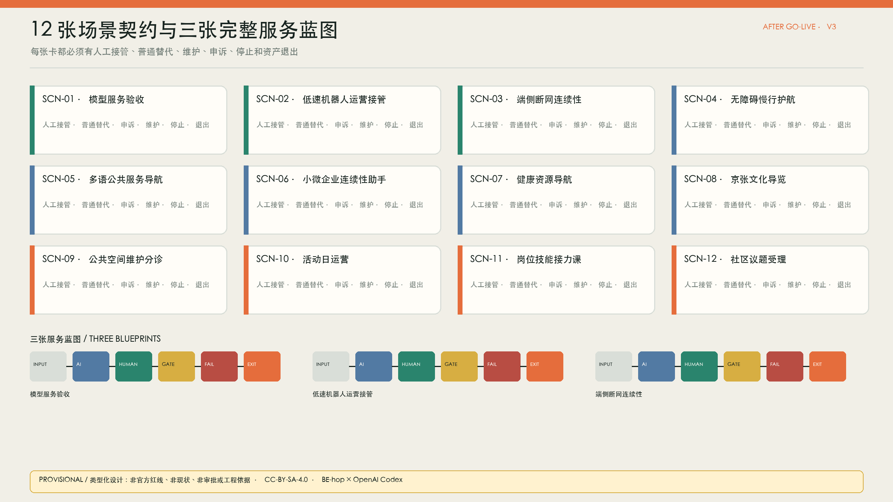
人类—AI 共创与采用责任簿
观察、生成、议决、1:1 小样、复核、采用或退出六步发生在真实空间中。AI 整理公开证据、显示缺口、在相同约束下生成不少于三种方案并汇总试验数据；规划师、工程人员、运营人员、居民和无障碍使用者决定公共利益、专业可行性和权利影响。法定审批、资源优先级、医疗判断和公共安全处置不交给 AI。深度 指标
采用责任簿逐场景记录受益、负担、问题所有、实际运营、资源、人工决定、申诉、维护、停止和资产去向。运营者在授权试点前保持 unknown，而不是用机构名称填空；没有签署的运营角色、训练完成、人工接管演练、普通替代与退出储备，场景不得进入开放环境。责任簿把“谁承担”与平面上的柜台、维护带、绕行路和退出接口对应起来。空间数据 指标
用地、建筑规模与拆改留方案
四类颜色表达采用准备与研发、公共接力与开放空间、企业采用与生活服务、社区培训与公共服务的设计功能覆盖层，不冒充法定用地。四类建筑原型为开放首层交接盒、共享工坊与维修带、无障碍共译庭、可逆服务单元；它们采用保留既有壳体、干式连接、可维护接口和构件护照。当前 GeoJSON footprint 是复算用的类型化包络，不是现状建筑或建设许可。空间数据 空间数据
拆改留只给出决策路径：确认的遗产和高适应性空间优先保留；结构、权属、消防与功能适配确认后才做适应性改造；短期服务使用可逆插入；资料不足时保持原状并继续调查。容积率、总建筑面积、高度、退界、停车与拆除量保持待正式控规和测绘补齐，图面不会用概念构件倒推出强度。指标 深度
交通、轨道、市政与公共服务设施
交通策略由连续主脊、三条概念缝合方向和三处普通绕行共同构成。步行、骑行、无障碍和公共停留优先于低速设备；机器人只在受控院内测试，进入开放环境须完成安全、接管和保险等专业程序。轨道接驳、道路交叉、消防、物流、停车和地下高铁保护线等待专项资料，当前线要素不作为道路或工程线位。空间数据 深度
市政与公共服务采用“先移动验证、后固定建设”。端侧设备必须支持断网、本地只读、可替换和低干扰接口；固定信息、人工柜台、电话与纸本在网络失败时继续运行。供电、通信、排水、消防和设备容量未核实前不作工程承诺；任何固定设备都要有维护通道、关闭方式、数据清除和构件去向。空间数据 深度
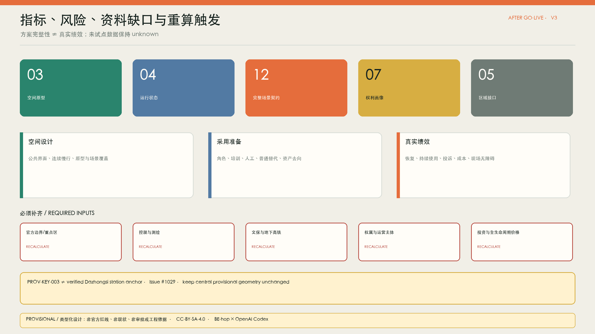
蓝绿空间、公共空间与城市风貌
公共空间最低包为连续无障碍、树荫与雨洪、非消费停留、固定信息、人工服务、夜间基本照明和数字失效后的普通使用。雨洪带不是设备景观，而是分隔测试与公共界面、组织树荫、降低热暴露并提供可维护边缘的断面构件。三个低体量公共地标为交付台、共译模型墙和持续运行站，不建泛科技纪念塔。来源 空间数据
风貌来自铁路工程文化的清晰、耐久、可维修和可替换，而不是未经核实的轨道符号。实线—虚线 Logo 同样承担状态说明：实线表示已验收且由人承担的责任链，虚线表示待验证、可撤回的 AI 建议；单色、小尺寸、深浅底和导视版本均由同一 SVG 规则生成。真实历史图像、品牌、人物作品和第三方字体未清权前不进入成果。空间数据 来源
更新项目清单、实施政策与分期计划
0–90 天不建设：完成正式底图请求、踏勘、用户旅程、三种同约束备选、纸本与实体模型共议、运营角色确认和故障演练。3–12 个月只设置可撤回样段，分别验证模型服务、低速机器人、端侧连续性及三处空间界面。1–3 年仅把通过公共价值、空间使用和运营接管的构件与服务纳入深化；每个阶段都可停止、迁移或撤除。空间数据 深度
实施主体按阶段进入：规划、工程与维护团队完成现状和安全复核，企业与高校研发团队提交版本和整改资料，社区、居民及无障碍使用者参加验收，授权部门与实际运营主体决定是否进入下一阶段。每个试点用数量、比例、时长、培训完成率、人工接管覆盖率、普通替代覆盖率、投诉反馈与资产退出闭环等可衡量指标持续监测和评估；指标缺失时不得升级。
全生命周期成本登记调查设计、数据许可、集成、空间改造、培训、日常运营、人工接管、维护恢复和退出处置九类，不虚构金额。年度活动只提出开放编组周、共译评审季、采用复盘会的空间与时间框架，Logo、传播、运营主体、资金和合作仍待授权团队确认。政策工具集中在培训工时、事件记录、供应商切换、数据可移植和构件护照。来源 指标
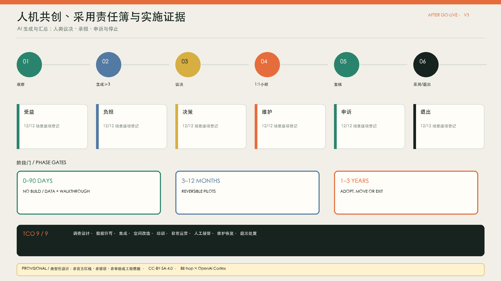
指标体系、面积复算与合规矩阵
指标分为空间设计、采用准备与真实绩效三组。空间设计记录三处详细原型、四态、公共界面和场景覆盖；采用准备记录角色、培训、人工接管、普通替代、申诉、停止和资产闭环；真实绩效包括恢复时间、持续使用、投诉、成本与现场无障碍表现，在授权试点前全部保持 unknown。1.0 表示结构化字段覆盖，不表示现场达标。指标 指标
GeoJSON 以 EPSG:4326 交换，在 EPSG:4548 下复算；land use 相邻分区保持共享顶点并校验零缺口、零重叠。官方边界、重点区、控规、测绘或专项条件变化会触发场地、建筑、绿地、公共空间与所有比率的整链重算。任务覆盖、标准与设计深度分别由三个矩阵审计，正文只保留与判断相邻的证据。指标 深度
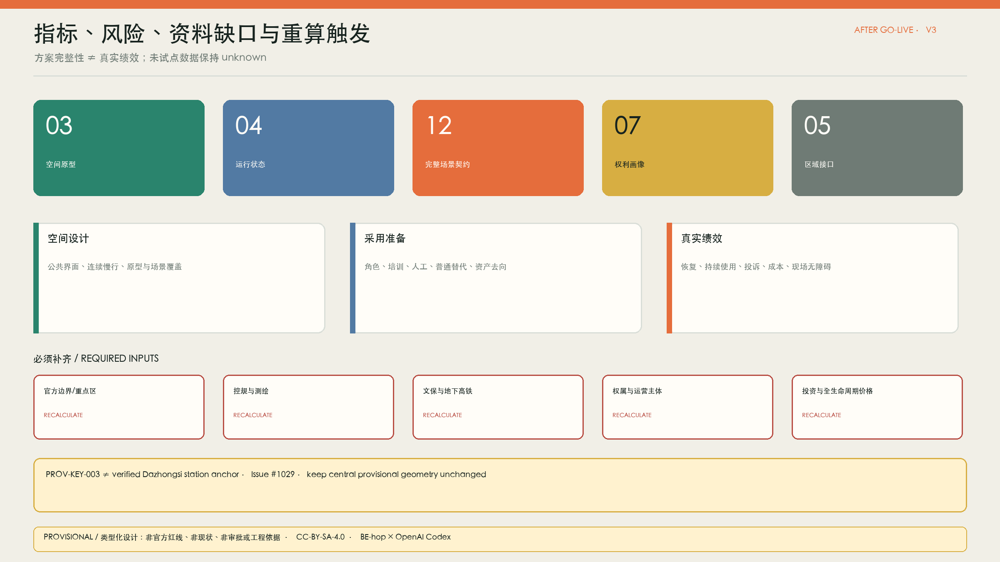
风险、版权与合规说明
主要风险包括临时边界被误读、PROV-KEY-003 被误当大钟寺站点、历史符号替代保护、AI 取代专业判断、数字排斥、供应商锁定、维护资金遗漏和退出资产滞留。控制措施是固定 provisional 警示、决策暂停区、人工最终决定、纸本电话柜台等效入口、采用责任簿、TCO 与退出清单。固定建设、文保、地下高铁、道路和公共安全必须另行进入法定程序。来源 深度
《无障碍环境建设法》第 39 条只用于其明确列举的公共服务事项；《生成式人工智能服务管理暂行办法》仅在其适用范围内引用；老年人运用智能技术政策只作为传统服务与智能服务并行的背景，不冒充本地审批依据。个人数据遵循最少收集、目的限定、可申诉和人工复核，未取得合法数据和授权时只使用公开或合成数据。来源 来源
三张 AI 意象的生成方法、提示摘要、人工修订、文件哈希和许可记录在生成账本；它们不提供空间尺寸、现状或审批证据。文本、确定性图件、结构化数据和本方案原创视觉以 CC-BY-SA-4.0 发布；外部事实保持原权利。包内不加载远程地图、CDN、外部字体或跟踪代码。来源 来源
参考资料
1. 征集官方公告、面向智能体任务书、资料注册表与 provisional geometry。 2. 北京市园林绿化局、北京市人民政府与海淀区政府关于京张铁路遗址公园、历史保护和 AI 创新带的公开资料。 3. 《中华人民共和国无障碍环境建设法》《生成式人工智能服务管理暂行办法》及老年人运用智能技术政策，均按限定范围引用。 4. Barcelona Innova Lab、CitCom.ai、Smart Kalasatama、Punggol Digital District、UK AI procurement 与 NIST AI RMF 的第一方材料。 5. Open-city-ai/haidian Issue #1029 关于 provisional 重点区锚定的维护者说明。来源
完整链接、日期、许可、用途限制、字体、Python 依赖和 AI 图像生成记录见 sources.json、report/copyright_statement.md 与 visual/assets/generation-ledger.json。